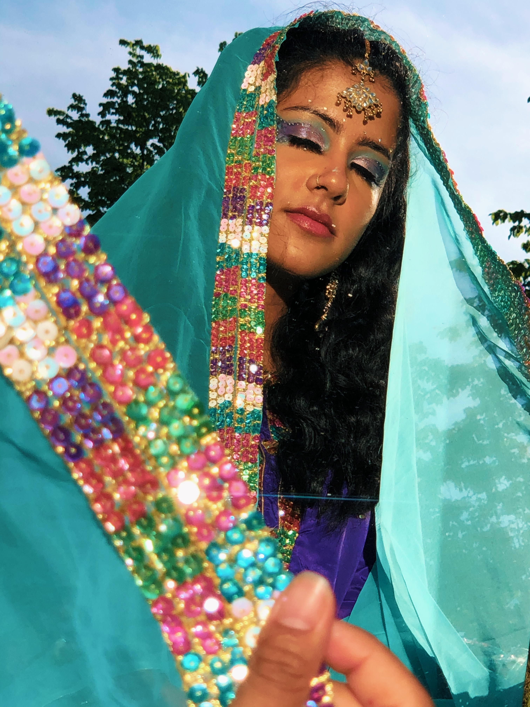
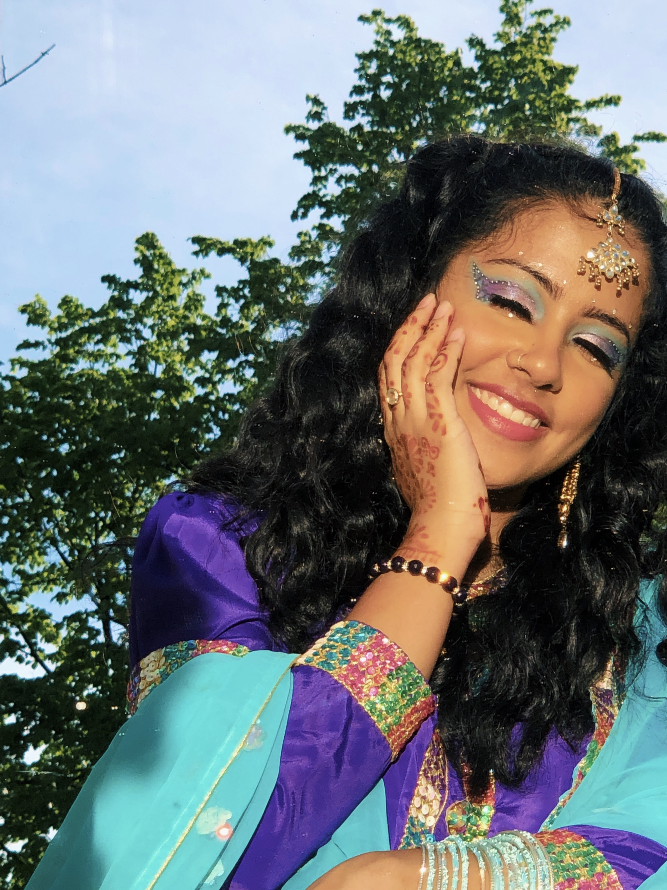

Tayyaba's Portfolio
Hi! My name is Tayyaba. I am a undergraduate student at Cornell University, Class of 2022. I am majoring in Computer Science and Asian Studies. A lot of people ask my why I chose these two majors since they appear to be very different. Truthfully, I enjoy STEM and Humanities a lot and believe that they are equally as important. In Asian Studies, I mostly focus on Japan and South Asia and am currently studying Japanese. I was supposed to study abroad in Japan, Fall 2020, but due to recent events that has been postponed to Spring 2021, fingers crossed!
A little more about me is that I really enjoy expressing my creative side in many ways, from graphic deisgn to trying out new makeup looks! I am also a big animal lover, growing up I always wanted a cat, but after my parents' constant refusal I ended up getting guinea pigs. I have three guinea pigs right now (at one point I had five), and they are the sweetest. I used to read a lot when I was younger so that is something that I am trying to get back into, always looking for reccomendations so if you have, please any let me know!
Professional Information: Most of the projects I have made have been in class, like a spotify playlist creator, an adaptation of the classic arcade game, Alien Invaders, a maze solving game, and some Turtle programming. Not to mention this portfolio too! Check out my LinkedIn and GitHub to learn more about my projects and experience.
Makeup Gallery
As I mentioned, I love playing around with makeup, here are some of my recent looks
 Click here to learn a random fact about me: